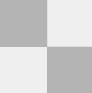
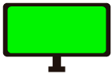

Request Axie
pause_circle_outline


Render axie
Render parts
This is my own version of
https://freakitties.github.io/
project visit him first
This is my ronin:ffc555fd1ea95f4e3038a25cc94099b473645ebc
just in case you want to buy me a coffee :D
How to use it:
type your axie ID and press enter or click in "Request Axie" button
there is 3 icons at the middle of the screen, that means pettite axie, transparent png sequence or green screen axie for OBS
in the right upside corner is a black menu, this is a render menu, select FPS and click start, and stop when you want to stop
Im an amateur but ill try to improve this tool